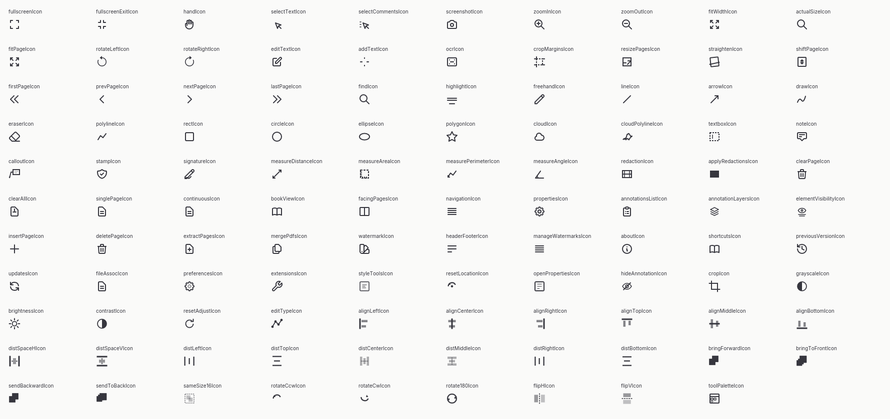
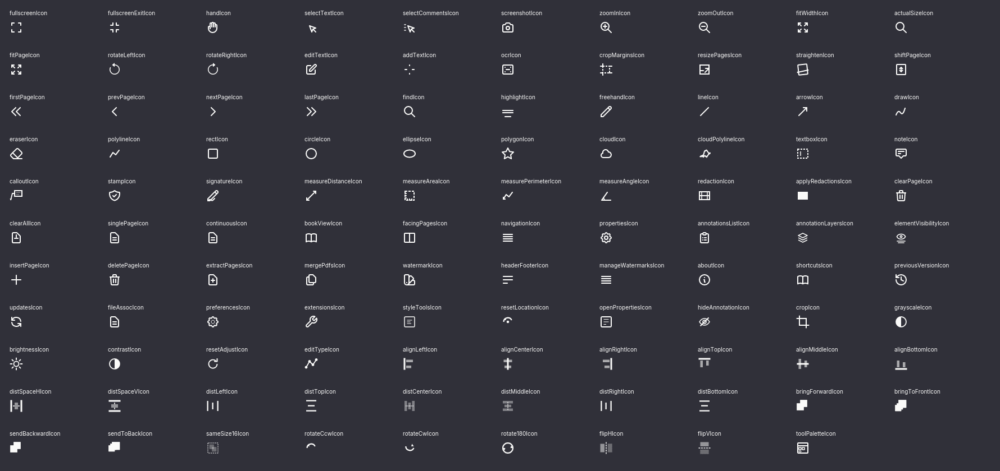

fullscreenIcon
built-in-ui-icon · 1 aanroep(en)162432
162432
Alle 122 SVG-exports uit ribbonIcons.js zijn tegen de tien bereikbare Solid-consumenten gecontroleerd. Alleen aantoonbare ingebouwde UI-aanroepen tellen als huidige iconen.
Geen aanroep in de ingebouwde UI gevonden. De export blijft via het extensieregister op naam beschikbaar.
Definitie L21 ↗Geen aanroep in de ingebouwde UI gevonden. De export blijft via het extensieregister op naam beschikbaar.
Definitie L23 ↗Geen aanroep in de ingebouwde UI gevonden. De export blijft via het extensieregister op naam beschikbaar.
Definitie L25 ↗Iced omits source SVG <text> glyph
Definitie L47 ↗Geen aanroep in de ingebouwde UI gevonden. De export blijft via het extensieregister op naam beschikbaar.
Definitie L105 ↗Iced omits source SVG <text> glyph
Definitie L107 ↗Geen aanroep in de ingebouwde UI gevonden. De export blijft via het extensieregister op naam beschikbaar.
Definitie L119 ↗Geen aanroep in de ingebouwde UI gevonden. De export blijft via het extensieregister op naam beschikbaar.
Definitie L131 ↗Geen aanroep in de ingebouwde UI gevonden. De export blijft via het extensieregister op naam beschikbaar.
Definitie L133 ↗Geen aanroep in de ingebouwde UI gevonden. De export blijft via het extensieregister op naam beschikbaar.
Definitie L143 ↗Geen aanroep in de ingebouwde UI gevonden. De export blijft via het extensieregister op naam beschikbaar.
Definitie L168 ↗Geen aanroep in de ingebouwde UI gevonden. De export blijft via het extensieregister op naam beschikbaar.
Definitie L170 ↗Geen aanroep in de ingebouwde UI gevonden. De export blijft via het extensieregister op naam beschikbaar.
Definitie L212 ↗Geen aanroep in de ingebouwde UI gevonden. De export blijft via het extensieregister op naam beschikbaar.
Definitie L214 ↗Geen aanroep in de ingebouwde UI gevonden. De export blijft via het extensieregister op naam beschikbaar.
Definitie L216 ↗Zeven vormgroepen zijn byte-identiek. Hun semantiek mag in de Rust-crate niet worden samengevoegd op basis van de SVG-hash.
Alle 109 ingebouwd gebruikte bronvormen op 24 px. De T in Tekst toevoegen en Tekstvak ontbreekt in deze Iced-renderer, omdat beide bron-SVG’s een <text>-element gebruiken. Daarvoor zijn nog vectorvarianten nodig.

